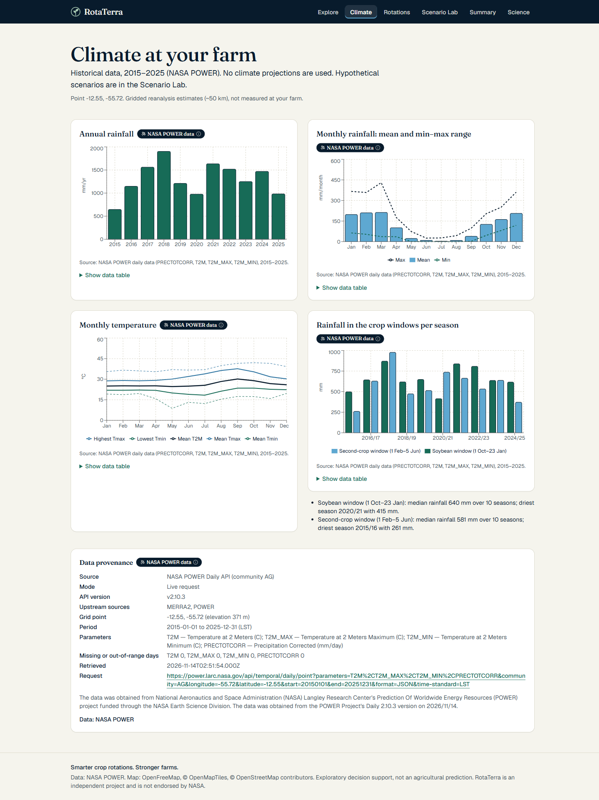
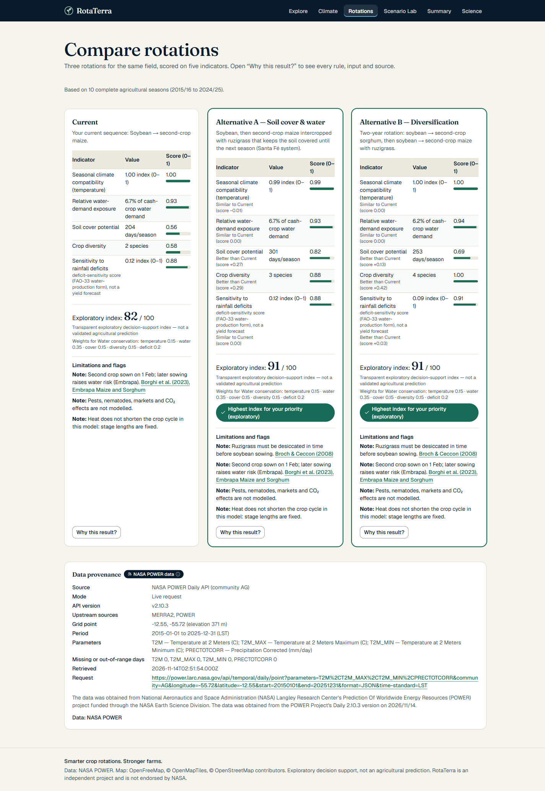
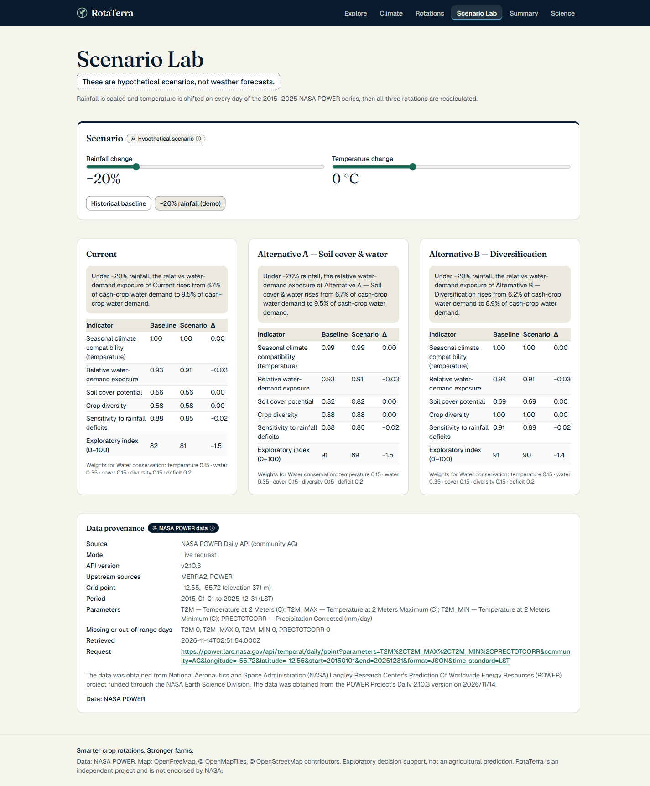

RotaTerra · NASA Space Apps Challenge 2026 · Field Shift
Farming in an Unpredictable Climate
Same farm, Sorriso, Mato Grosso. What follows the soybean changes how exposed that farm is to the next dry spell.
Source: NASA POWER Daily, point -12.55, -55.72. Real screenshot from the RotaTerra Climate page.

Earth observations → decisions
NASA Sees the Patterns. Farmers Need the Answers.
of daily rainfall and temperature, 2015–2025, from NASA POWER (built on the MERRA-2 reanalysis).
Honest scale: grid of roughly 50 km. An estimate for the area around the farm, not a measurement on it.

The gap is not data. It is the step from data to a decision. Provenance is on every screen. Real screenshot.
Smarter crop rotations. Stronger farms.
Introducing RotaTerra
- Select a farmMap click or coordinates, plus soil and priority
- Understand climate conditionsEleven years of NASA POWER charts
- Compare rotationsThree strategies, five indicators
- Test scenariosHypothetical rainfall and temperature changes
- Explore a decision“Why this result?” shows every rule and source
Rotations screen, default farm. Exploratory decision support, not a yield or weather forecast.
How the numbers are made
From Earth Observations to Farming Decisions
NASA Earth Observations
NASA POWER: daily rain and air temperature, 2015–2025.
Climate Indicators
How much water the air pulls from a crop each day (evapotranspiration, Hargreaves–Samani).
Farm and Crop Data
Your soil, sequence and priority, plus FAO crop parameters.
Rotation Comparison
Daily soil-water balance over 10 seasons for 3 rotations, scored on 5 indicators.
Decision Insights
Exploratory index with its weights, “Why this result?”, and scenario tests.
Live demonstration
One Farm. Three Strategies. Different Futures.
| Current | A: Soil cover | B: Diversified | |
|---|---|---|---|
| Exploratory index, baseline | 82 | 91 | 91 |
| Index at −20% rain | 81 | 89 | 90 |
| Water-demand exposure, baseline → −20% | 6.7 → 9.5% | 6.7 → 9.5% | 6.2 → 8.9% |
| Soil cover (days per season) | 204 | 301 | 253 |
A ties Current on water by design: each season restarts from an empty root zone and crop residue is not modelled. The −20% effect on the index is small (about −1.5 points), but traceable and measurable.
Outputs of the app on real NASA POWER data (v2.10.3). Hypothetical scenario, not a forecast.

What we show, and what we do not
Turning Data into Resilience
Demonstrated today
- Real NASA POWER data with provenance on screen
- Transparent FAO-56 comparison of three rotations
- Scenario tests that recalculate every indicator
- “Why this result?” traces numbers to sources
Potential, not yet tested
- Seasonal planning and climate-risk conversations
- Clearer water trade-offs between rotations
- Easier access to Earth science for farmers
- A shared starting point for farmer–agronomist talks
Limits, said out loud. Reanalysis at about 50 km, not measured at the farm · 10 seasons only · Mato Grosso calendar · ruzigrass Kc is a proxy · no field validation · no pests, markets or CO₂ · indicators are relative and exploratory · scenarios are hypothetical, not forecasts.
Next
Better Decisions Today. More Resilient Farms Tomorrow.
NASA helps us understand our changing planet. RotaTerra helps farmers explore what to do next.
Where it could go (future work, not built)